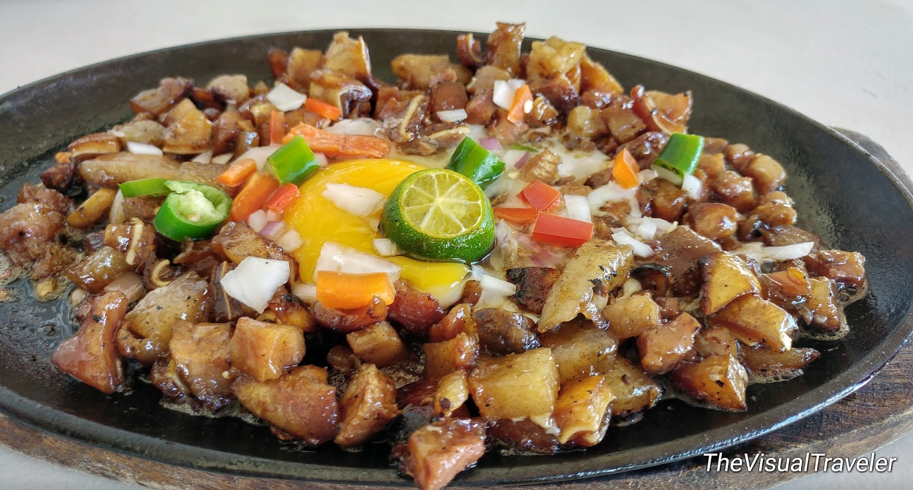

Pork Sisig

Photo from: The Visual Traveler
Description:
Pork sisig is one of the most popular dishes in the Philippines!
Ingredients:
- 1 lb pig ears
- 1 lb pig snout
- 1 lb pork belly
- 2 pieces onions (minced)
- 3 pieces bay leaves
- 2 teaspoons salt
- 4 thumbs ginger (crushed)
- 1 quarts water
Sisig Dressing:
- 1/2 cup Lady's Choice Mayonnaise
- 2 tablespoons sukang iloko
- 1/4 teaspoon ground black pepper
- 1 teaspoon salt
- 1 teaspoon sugar
- 1/4 cup liver spread
- 2 limes
- 1 tablespoon Knorr Liquid Seasoning
Steps/Instructions:
Enjoy your delicious meal!
Go to Home Page